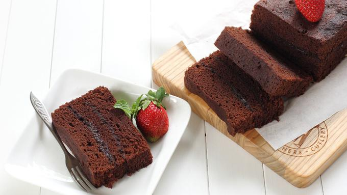

Resep
Brownies
Bahan-Bahan
4 butir telur
150 gram gula pasir
80 gram tepung terigu protein sedang
35 gram bubuk cokelat
75 gram dark cooking chocolate (DCC)
120 gram mentega
Cara Membuat
Campur mentega dan DCC, lalu lelehkan dengan cara ditim (tapi tidak sampai mendidih). Kemudian, dinginkan di suhu ruang.
Kocok telur, gula pasir, dan SP hingga mengembang dan kental berjejak.
Masukkan campuran tepung terigu, cokelat bubuk, baking powder, dan vanili yang sudah diayak. Kocok sebentar dengan mixer berkecepatan rendah.
Tuang campuran mentega dan DCC ke adonan, lalu aduk balik hingga rata sampai tidak ada endapan cairan.
Ambil 2 sdm adonan, campur dengan kental manis cokelat. Ini nanti untuk lapisan tengah brownies.
Bagi adonan menjadi 3 bagian sama banyak.
Panaskan kukusan. Siapkan loyang yang sudah diolesi margarin dan dialasi baking paper.
Tuang 1 bagian adonan ke loyang, kukus selama 10 menit.
Tuang 1/2 adonan yang sudah dicampur kental manis cokelat, kukus selama 10 menit.
Tuang 1 bagian adonan ke loyang, kukus selama 10 menit.
Tuang 1/2 adonan yang sudah dicampur kental manis cokelat, kukus selama 10 menit.
Tuang 1 bagian adonan ke loyang, kukus selama 30 menit.
Keluarkan loyang dari kukusan. Setelah dingin, keluarkan brownies dari loyang. Sajikan.
